在开始今天的学习前，我祝各位同学新春快乐、工作顺利、身体健康、阖家幸福，绍文给您拜年啦！
每个做 UI 的 Android 开发，上辈子都是折翼的天使。
多年来，有那么一群苦逼的 Android 开发，他们饱受碎片化之苦，面对着各式各样的手机屏幕尺寸和分辨率，还要与“凶残”的产品和 UI 设计师过招，日复一日、年复一年的做着 UI 适配和优化工作，蹉跎着青春的岁月。更加不幸的是，最近两年这个趋势似乎还愈演愈烈：刘海屏、全面屏，还有即将推出的柔性折叠屏，UI 适配将变得越来越复杂。
UI 优化究竟指的是什么呢？我认为所谓的 UI 优化，应该包含两个方面：一个是效率的提升，我们可以非常高效地把 UI 的设计图转化成应用界面，并且保证 UI 界面在不同尺寸和分辨率的手机上都是一致的；另一个是性能的提升，在正确实现复杂、炫酷的 UI 设计的同时，需要保证用户有流畅的体验。
那如何将我们从无穷无尽的 UI 适配中拯救出来呢？
UI 渲染的背景知识
究竟什么是 UI 渲染呢？Android 的图形渲染框架十分复杂，不同版本的差异也比较大。但是无论怎么样，它们都是为了将我们代码中的 View 或者元素显示到屏幕中。
而屏幕作为直接面对用户的手机硬件，类似厚度、色彩、功耗等都是厂家非常关注的。从功能机小小的黑白屏，到现在超大的全面屏，我们先来看手机屏幕的发展历程。
1. 屏幕与适配
作为消费者来说，通常会比较关注屏幕的尺寸、分辨率以及厚度这些指标。Android 的碎片化问题令人痛心疾首，屏幕的差异正是碎片化问题的“中心”。屏幕的尺寸从 3 英寸到 10 英寸，分辨率从 320 到 1920 应有尽有，对我们 UI 适配造成很大困难。
除此之外，材质也是屏幕至关重要的一个评判因素。目前智能手机主流的屏幕可分为两大类：一种是 LCD（Liquid Crystal Display），即液晶显示器；另一种是 OLED（Organic Light-Emitting Diode 的）即有机发光二极管。
最新的旗舰机例如 iPhone XS Max 和华为 Mate 20 Pro 使用的都是 OLED 屏幕。相比 LCD 屏幕，OLED 屏幕在色彩、可弯曲程度、厚度以及耗电都有优势。正因为这些优势，全面屏、曲面屏以及未来的柔性折叠屏，使用的都是 OLED 材质。关于 OLED 与 LCD 的具体差别，你可以参考《OLED 和 LCD 区别》和《手机屏幕的前世今生，可能比你想的还精彩》。今年柔性折叠屏肯定是最大的热点，不过 OLED 的单价成本要比 LCD 高很多。
对于屏幕碎片化的问题，Android 推荐使用 dp 作为尺寸单位来适配 UI，因此每个 Android 开发都应该很清楚 px、dp、dpi、ppi、density 这些概念。
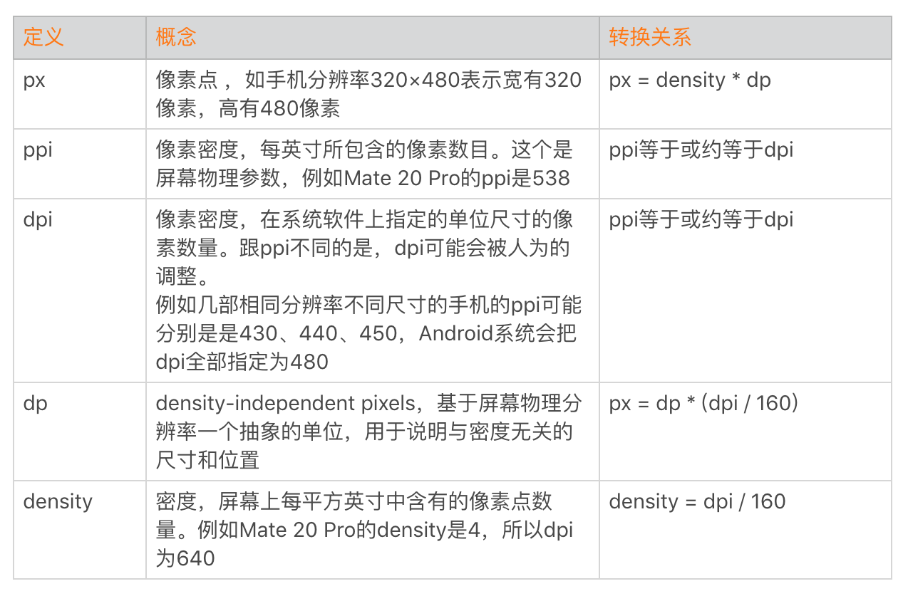
通过 dp 加上自适应布局可以基本解决屏幕碎片化的问题，也是 Android 推荐使用的屏幕兼容性适配方案。但是它会存在两个比较大的问题：
-
不一致性。因为 dpi 与实际 ppi 的差异性，导致在相同分辨率的手机上，控件的实际大小会有所不同。
-
效率。设计师的设计稿都是以 px 为单位的，开发人员为了 UI 适配，需要手动通过百分比估算出 dp 值。
除了直接 dp 适配之外，目前业界比较常用的 UI 适配方法主要有下面几种：
-
限制符适配方案。主要有宽高限定符与 smallestWidth 限定符适配方案，具体可以参考《Android 目前稳定高效的 UI 适配方案》《smallestWidth 限定符适配方案》。
-
今日头条适配方案。通过反射修正系统的 density 值，具体可以参考《一种极低成本的 Android 屏幕适配方式》《今日头条适配方案》。
2. CPU 与 GPU
除了屏幕，UI 渲染还依赖两个核心的硬件：CPU 与 GPU。UI 组件在绘制到屏幕之前，都需要经过 Rasterization（栅格化）操作，而栅格化操作又是一个非常耗时的操作。GPU（Graphic Processing Unit ）也就是图形处理器，它主要用于处理图形运算，可以帮助我们加快栅格化操作。
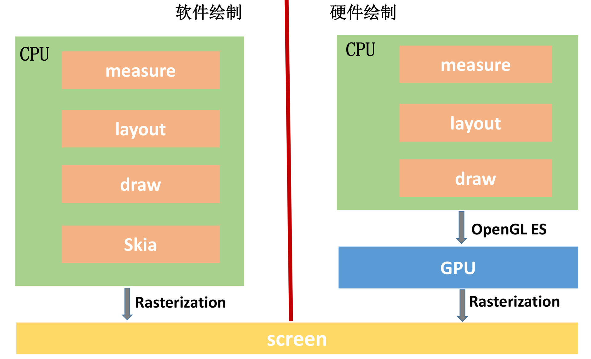
你可以从图上看到，软件绘制使用的是 Skia 库，它是一款能在低端设备如手机上呈现高质量的 2D 跨平台图形框架，类似 Chrome、Flutter 内部使用的都是 Skia 库。
3. OpenGL 与 Vulkan
对于硬件绘制，我们通过调用 OpenGL ES 接口利用 GPU 完成绘制。OpenGL是一个跨平台的图形 API，它为 2D/3D 图形处理硬件指定了标准软件接口。而 OpenGL ES 是 OpenGL 的子集，专为嵌入式设备设计。
在官方硬件加速的文档中，可以看到很多 API 都有相应的 Android API level 限制。
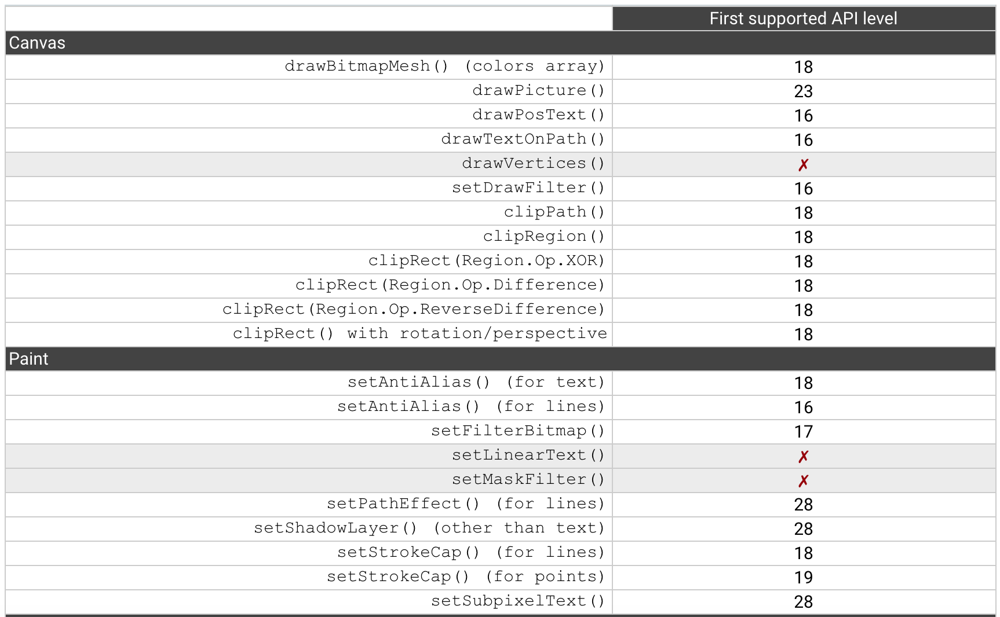
这是为什么呢？其实这主要是受OpenGL ES版本与系统支持的限制，直到最新的 Android P，有 3 个 API 是仍然没有支持。对于不支持的 API，我们需要使用软件绘制模式，渲染的性能将会大大降低。
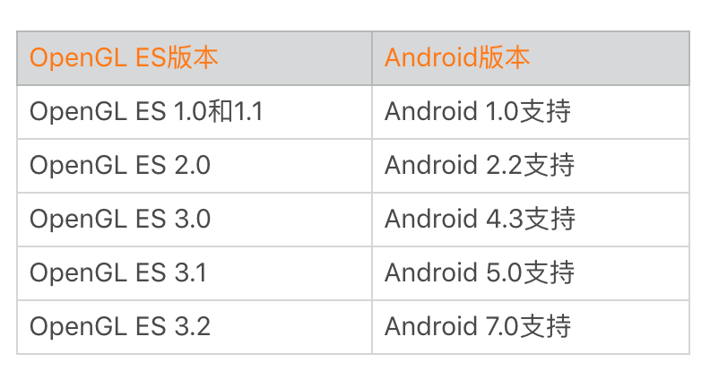
Android 7.0 把 OpenGL ES 升级到最新的 3.2 版本同时，还添加了对Vulkan的支持。Vulkan 是用于高性能 3D 图形的低开销、跨平台 API。相比 OpenGL ES，Vulkan 在改善功耗、多核优化提升绘图调用上有着非常明显的优势。
在国内，“王者荣耀”是比较早适配 Vulkan 的游戏，虽然目前兼容性还有一些问题，但是 Vulkan 版本的王者荣耀在流畅性和帧数稳定性都有大幅度提升，即使是战况最激烈的团战阶段，也能够稳定保持在 55～60 帧。
Android 渲染的演进
跟耗电一样，Android 的 UI 渲染性能也是 Google 长期以来非常重视的，基本每次 Google I/O 都会花很多篇幅讲这一块。每个开发者都希望自己的应用或者游戏可以做到 60 fps 如丝般顺滑，不过相比 iOS 系统，Android 的渲染性能一直被人诟病。
Android 系统为了弥补跟 iOS 的差距，在每个版本都做了大量的优化。在了解 Android 的渲染之前，需要先了解一下 Android 图形系统的整体架构，以及它包含的主要组件。
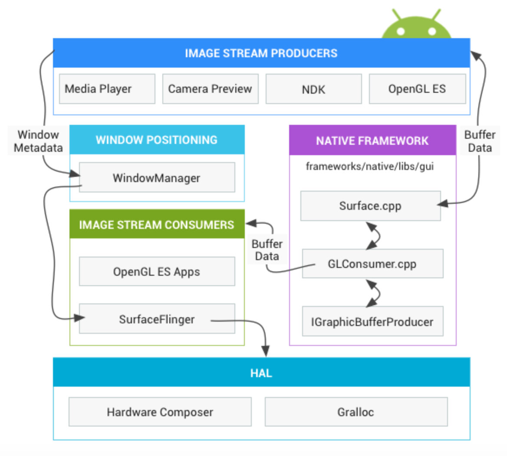
我曾经在一篇文章看过一个生动的比喻，如果把应用程序图形渲染过程当作一次绘画过程，那么绘画过程中 Android 的各个图形组件的作用是：
-
画笔：Skia 或者 OpenGL。我们可以用 Skia 画笔绘制 2D 图形，也可以用 OpenGL 来绘制 2D/3D 图形。正如前面所说，前者使用 CPU 绘制，后者使用 GPU 绘制。
-
画纸：Surface。所有的元素都在 Surface 这张画纸上进行绘制和渲染。在 Android 中，Window 是 View 的容器，每个窗口都会关联一个 Surface。而 WindowManager 则负责管理这些窗口，并且把它们的数据传递给 SurfaceFlinger。
-
画板：Graphic Buffer。Graphic Buffer 缓冲用于应用程序图形的绘制，在 Android 4.1 之前使用的是双缓冲机制；在 Android 4.1 之后，使用的是三缓冲机制。
-
显示：SurfaceFlinger。它将 WindowManager 提供的所有 Surface，通过硬件合成器 Hardware Composer 合成并输出到显示屏。
接下来我将通过 Android 渲染演进分析的方法，帮你进一步加深对 Android 渲染的理解。
1. Android 4.0：开启硬件加速
在 Android 3.0 之前，或者没有启用硬件加速时，系统都会使用软件方式来渲染 UI。
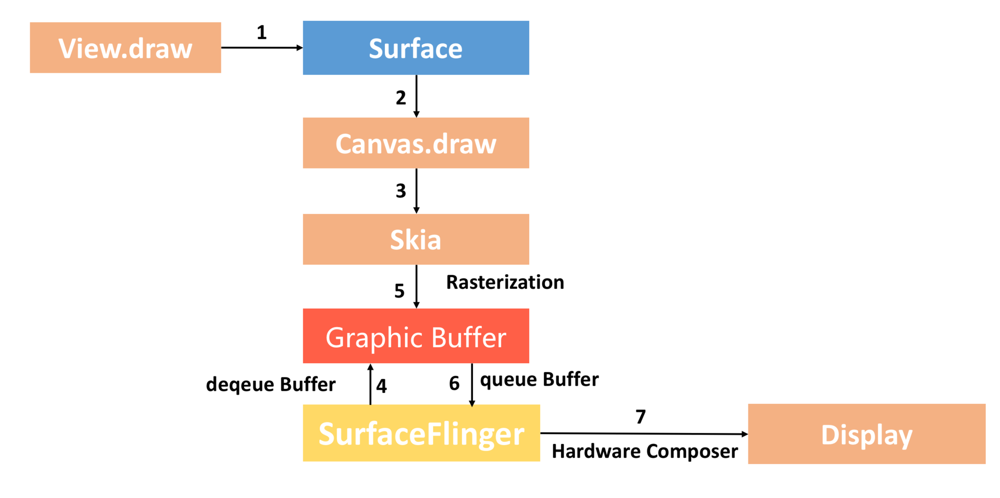
整个流程如上图所示：
-
Surface。每个 View 都由某一个窗口管理，而每一个窗口都关联有一个 Surface。
-
Canvas。通过 Surface 的 lock 函数获得一个 Canvas，Canvas 可以简单理解为 Skia 底层接口的封装。
-
Graphic Buffer。SurfaceFlinger 会帮我们托管一个BufferQueue，我们从 BufferQueue 中拿到 Graphic Buffer，然后通过 Canvas 以及 Skia 将绘制内容栅格化到上面。
-
SurfaceFlinger。通过 Swap Buffer 把 Front Graphic Buffer 的内容交给 SurfaceFinger，最后硬件合成器 Hardware Composer 合成并输出到显示屏。
整个渲染流程是不是非常简单？但是正如我前面所说，CPU 对于图形处理并不是那么高效，这个过程完全没有利用到 GPU 的高性能。
硬件加速绘制
所以从 Androd 3.0 开始，Android 开始支持硬件加速，到 Android 4.0 时，默认开启硬件加速。
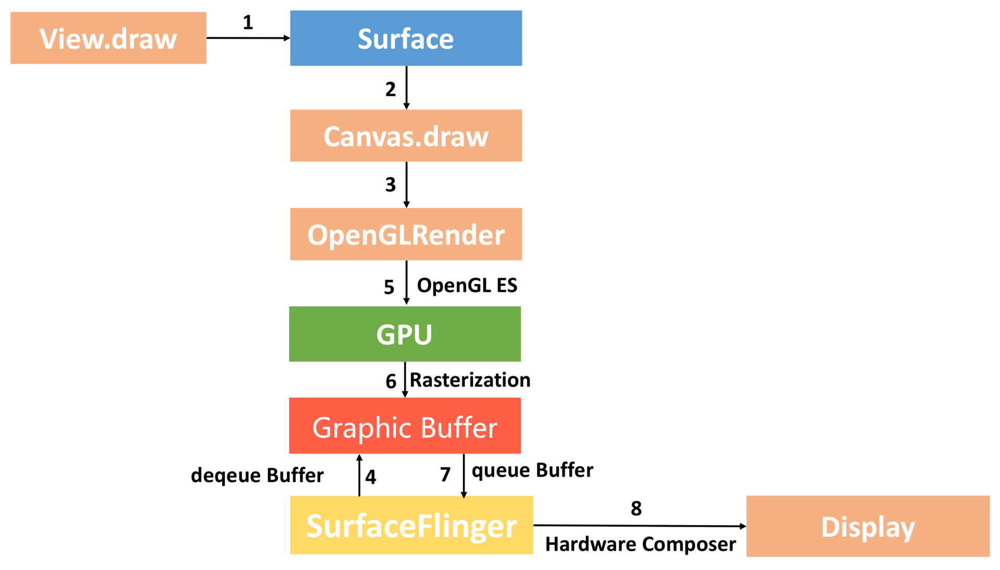
硬件加速绘制与软件绘制整个流程差异非常大，最核心就是我们通过 GPU 完成 Graphic Buffer 的内容绘制。此外硬件绘制还引入了一个 DisplayList 的概念，每个 View 内部都有一个 DisplayList，当某个 View 需要重绘时，将它标记为 Dirty。
当需要重绘时，仅仅只需要重绘一个 View 的 DisplayList，而不是像软件绘制那样需要向上递归。这样可以大大减少绘图的操作数量，因而提高了渲染效率。
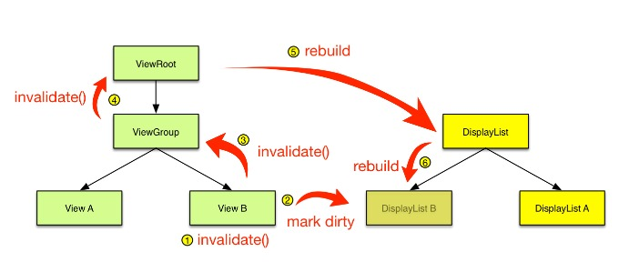
2. Android 4.1：Project Butter
优化是无止境的，Google 在 2012 年的 I/O 大会上宣布了 Project Butter 黄油计划，并且在 Android 4.1 中正式开启了这个机制。
Project Butter 主要包含两个组成部分，一个是 VSYNC，一个是 Triple Buffering。
VSYNC 信号
在讲文件 I/O 跟网络 I/O 的时候，我讲到过中断的概念。对于 Android 4.0，CPU 可能会因为在忙别的事情，导致没来得及处理 UI 绘制。
为解决这个问题，Project Buffer 引入了VSYNC，它类似于时钟中断。每收到 VSYNC 中断，CPU 会立即准备 Buffer 数据，由于大部分显示设备刷新频率都是 60Hz（一秒刷新 60 次），也就是说一帧数据的准备工作都要在 16ms 内完成。
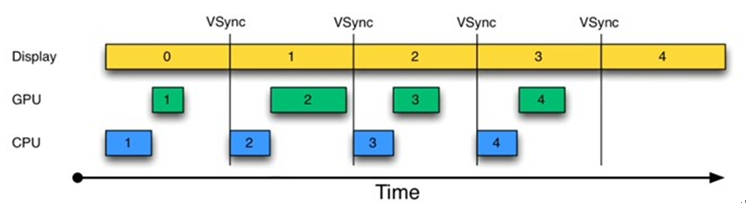
这样应用总是在 VSYNC 边界上开始绘制，而 SurfaceFlinger 总是 VSYNC 边界上进行合成。这样可以消除卡顿，并提升图形的视觉表现。
三缓冲机制 Triple Buffering
在 Android 4.1 之前，Android 使用双缓冲机制。怎么理解呢？一般来说，不同的 View 或者 Activity 它们都会共用一个 Window，也就是共用同一个 Surface。
而每个 Surface 都会有一个 BufferQueue 缓存队列，但是这个队列会由 SurfaceFlinger 管理，通过匿名共享内存机制与 App 应用层交互。
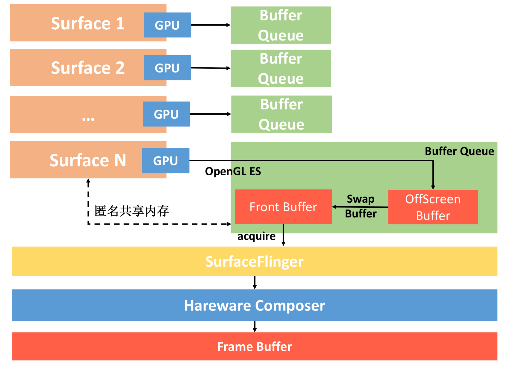
整个流程如下：
-
每个 Surface 对应的 BufferQueue 内部都有两个 Graphic Buffer ，一个用于绘制一个用于显示。我们会把内容先绘制到离屏缓冲区（OffScreen Buffer），在需要显示时，才把离屏缓冲区的内容通过 Swap Buffer 复制到 Front Graphic Buffer 中。
-
这样 SurfaceFlinge 就拿到了某个 Surface 最终要显示的内容，但是同一时间我们可能会有多个 Surface。这里面可能是不同应用的 Surface，也可能是同一个应用里面类似 SurefaceView 和 TextureView，它们都会有自己单独的 Surface。
-
这个时候 SurfaceFlinger 把所有 Surface 要显示的内容统一交给 Hareware Composer，它会根据位置、Z-Order 顺序等信息合成为最终屏幕需要显示的内容，而这个内容会交给系统的帧缓冲区 Frame Buffer 来显示（Frame Buffer 是非常底层的，可以理解为屏幕显示的抽象）。
如果你理解了双缓冲机制的原理，那就非常容易理解什么是三缓冲区了。如果只有两个 Graphic Buffer 缓存区 A 和 B，如果 CPU/GPU 绘制过程较长，超过了一个 VSYNC 信号周期，因为缓冲区 B 中的数据还没有准备完成，所以只能继续展示 A 缓冲区的内容，这样缓冲区 A 和 B 都分别被显示设备和 GPU 占用，CPU 无法准备下一帧的数据。
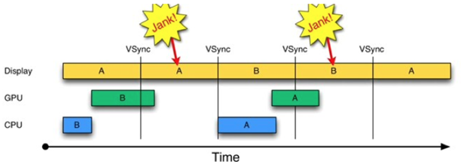
如果再提供一个缓冲区，CPU、GPU 和显示设备都能使用各自的缓冲区工作，互不影响。简单来说，三缓冲机制就是在双缓冲机制基础上增加了一个 Graphic Buffer 缓冲区，这样可以最大限度的利用空闲时间，带来的坏处是多使用的了一个 Graphic Buffer 所占用的内存。
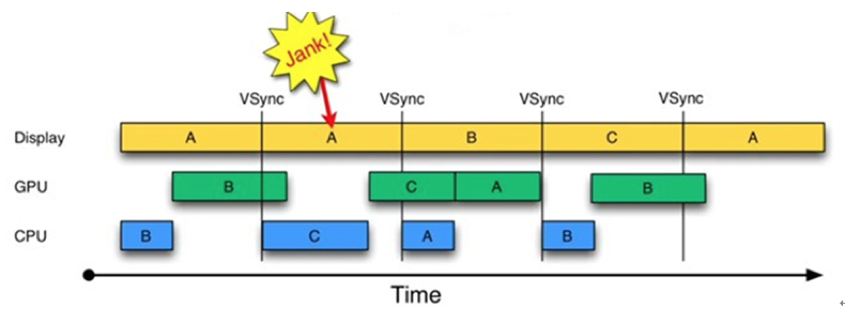
对于 VSYNC 信号和 Triple Buffering 更详细的介绍，可以参考《Android Project Butter 分析》。
数据测量
“工欲善其事，必先利其器”，Project Butter 在优化 UI 渲染性能的同时，也希望可以帮助我们更好地排查 UI 相关的问题。
在 Android 4.1，新增了 Systrace 性能数据采样和分析工具。在卡顿和启动优化中，我们已经使用过 Systrace 很多次了，也可以用它来检测每一帧的渲染情况。
Tracer for OpenGL ES 也是 Android 4.1 新增加的工具，它可逐帧、逐函数的记录 App 用 OpenGL ES 的绘制过程。它提供了每个 OpenGL 函数调用的消耗时间，所以很多时候用来做性能分析。但因为其强大的记录功能，在分析渲染问题时，当 Traceview、Systrace 都显得棘手时，还找不到渲染问题所在时，此时这个工具就会派上用场了。
在 Android 4.2，系统增加了检测绘制过度工具，具体的使用方法可以参考《检查 GPU 渲染速度和绘制过度》。
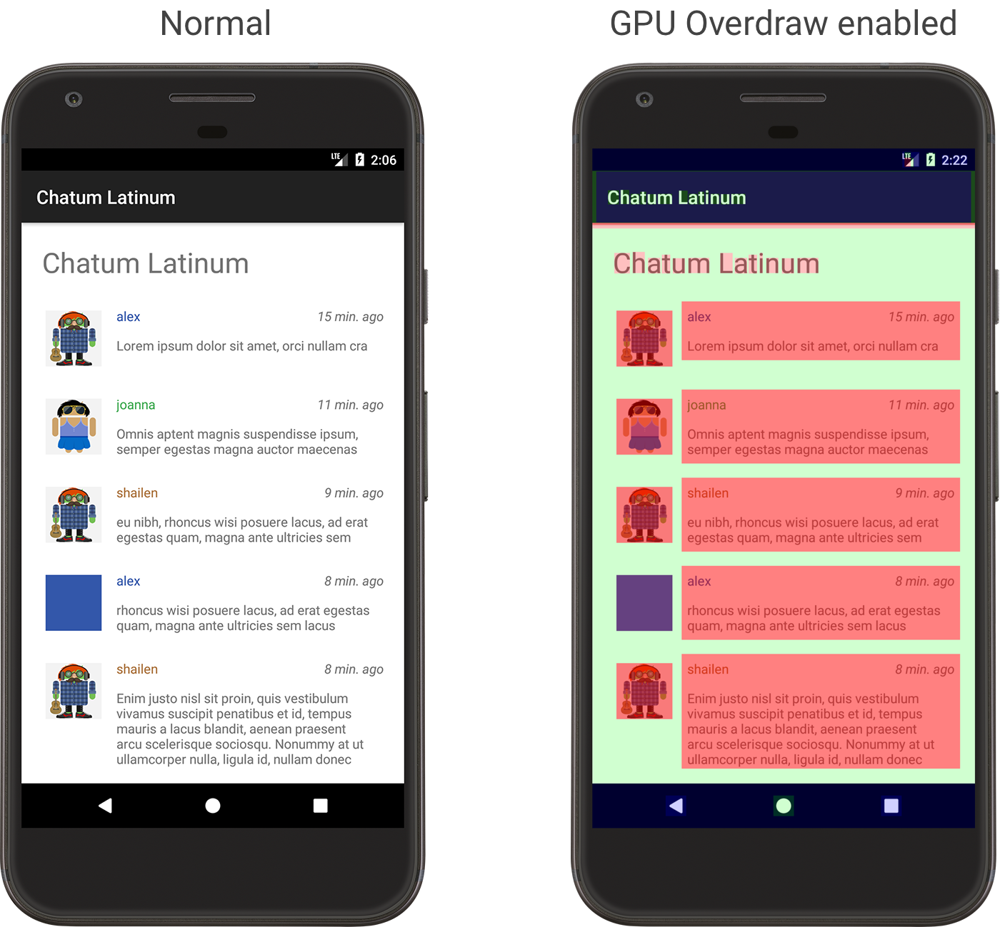
3. Android 5.0：RenderThread
经过 Project Butter 黄油计划之后，Android 的渲染性能有了很大的改善。但是不知道你有没有注意到一个问题，虽然我们利用了 GPU 的图形高性能运算，但是从计算 DisplayList，到通过 GPU 绘制到 Frame Buffer，整个计算和绘制都在 UI 主线程中完成。
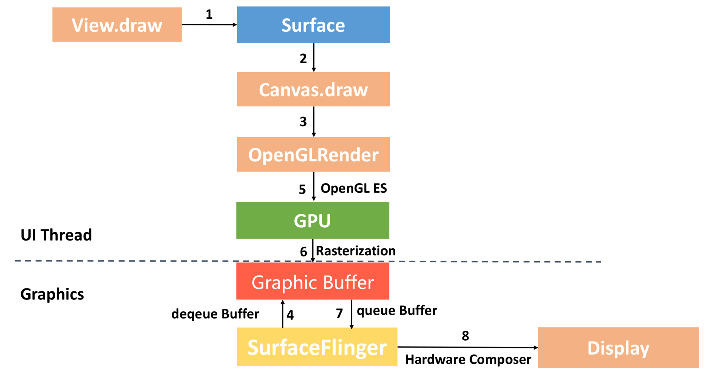
UI 主线程“既当爹又当妈”，任务过于繁重。如果整个渲染过程比较耗时，可能造成无法响应用户的操作，进而出现卡顿。GPU 对图形的绘制渲染能力更胜一筹，如果使用 GPU 并在不同线程绘制渲染图形，那么整个流程会更加顺畅。
正因如此，在 Android 5.0 引入了两个比较大的改变。一个是引入了 RenderNode 的概念，它对 DisplayList 及一些 View 显示属性做了进一步封装。另一个是引入了 RenderThread，所有的 GL 命令执行都放到这个线程上，渲染线程在 RenderNode 中存有渲染帧的所有信息，可以做一些属性动画，这样即便主线程有耗时操作的时候也可以保证动画流畅。
在官方文档 《检查 GPU 渲染速度和绘制过度》中，我们还可以开启 Profile GPU Rendering 检查。在 Android 6.0 之后，会输出下面的计算和绘制每个阶段的耗时：
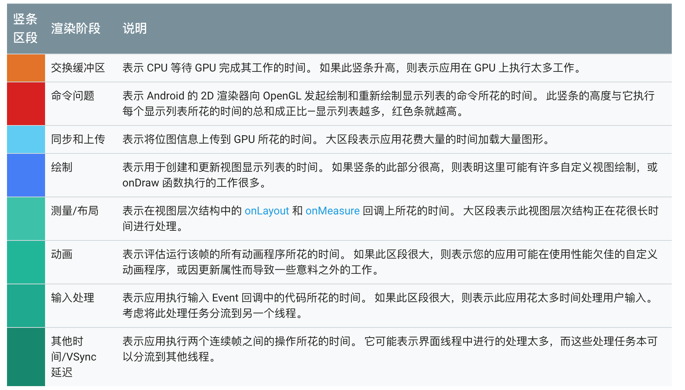
如果我们把上面的步骤转化线程模型，可以得到下面的流水线模型。CPU 将数据同步（sync）给 GPU 之后，一般不会阻塞等待 GPU 渲染完毕，而是通知结束后就返回。而 RenderThread 承担了比较多的绘制工作，分担了主线程很多压力，提高了 UI 线程的响应速度。
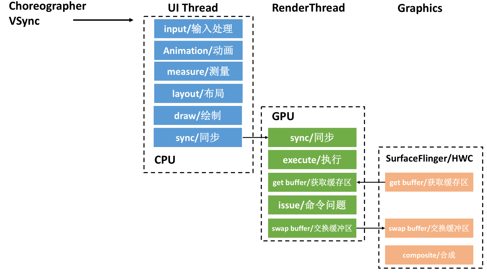
4. 未来
在 Android 6.0 的时候，Android 在 gxinfo 添加了更详细的信息；在 Android 7.0 又对 HWUI 进行了一些重构，而且支持了 Vulkan；在 Android P 支持了 Vulkun 1.1。我相信在未来不久的 Android Q，更好地支持 Vulkan 将是一个必然的方向。
总的来说，UI 渲染的优化必然会朝着两个方向。一个是进一步压榨硬件的性能，让 UI 可以更加流畅。一个是改进或者增加更多的分析工具，帮助我们更容易地发现以及定位问题。
总结
今天我们通过 Android 渲染的演进历程，一步一步加深对 Android 渲染机制的理解，这对我们 UI 渲染优化工作会有很大的帮助。
但是凡事都要两面看，硬件加速绘制虽然极大地提高了 Android 系统显示和刷新的速度，但它也存在那么一些问题。一方面是内存消耗，OpenGL API 调用以及 Graphic Buffer 缓冲区会占用至少几 MB 的内存，而实际上会占用更多一些。不过最严重的还是兼容性问题，部分绘制函数不支持是其中一部分原因，更可怕的是硬件加速绘制流程本身的 Bug。由于 Android 每个版本对渲染模块都做了一些重构，在某些场景经常会出现一些莫名其妙的问题。
例如每个应用总有那么一些 libhwui.so 相关的崩溃，曾经这个崩溃占我们总崩溃的 20% 以上。我们内部花了整整一个多月，通过发了几十个灰度，使用了 Inline Hook、GOT Hook 等各种手段。最后才定位到问题的原因是系统内部 RenderThread 与主线程数据同步的 Bug，并通过规避的方法得以解决。
课后作业
人们都说 iOS 系统更加流畅，对于 Android 的 UI 渲染你了解多少呢？在日常工作中，你是使用哪种方式做 UI 适配的，觉得目前在渲染方面最大的痛点是什么？欢迎留言跟我和其他同学一起讨论。
在 UI 渲染这方面，其实我也并不是非常资深，针对文中所讲的，如果你有更好的思路和想法，一定给我留言，欢迎留下你的想法。
Android 渲染架构非常庞大，而且演进得也非常快。如果你还有哪些不理解的地方，可以进一步阅读下面的参考资料：
-
2018 Google I/O：Drawn out: how Android renders
-
官方文档：Android 图形架构
-
浏览器渲染：一颗像素的诞生
COMMUNITY NOTES
读者评论
您好 我们的项目也有很多libhwui的崩溃，占jni的35%以上，可以分享下大概的解决思路和方向吗
老哥Android显示系统说得不错。老哥的风格，由浅入深，授人以渔，非常像一个优秀的学院派教授说课风格，很喜欢，相信其他人也很容易看懂
张哥，新年快乐！
张老师您好，我们的应用也遇到了hwui的问题且占比很高，能简单分享一下思路吗，不胜感激
libhwui我们也经常遇到这个怎么解决
非常希望可以分享如何解决libhwui的崩溃，我们项目中也有很多
目前遇到问题优化的时候，有些阶段发生的事情感觉有点无从下手去解决，比如命令问题和交换缓冲区
您好 我们的项目也有很多libhwui的崩溃，不知是否可以帮忙提供一下解决思路。多谢。
过年好，老哥